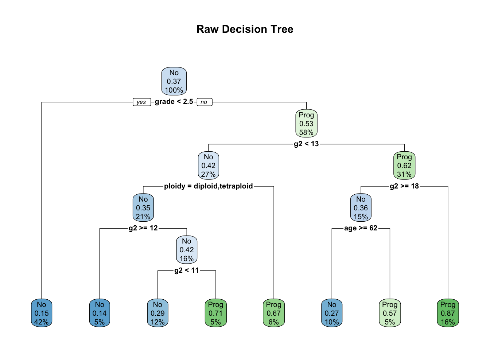
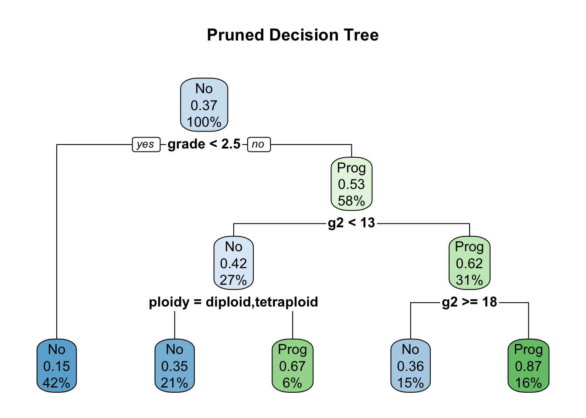

决策树算法的理论请参考本博客的这篇文章。 本文使用rpart包来完成决策树建模，主要内容整理自谢益辉的一篇中文论文。
rpart包主要有两个函数组成，分别介绍如下：
rpart(formula, data, weight s, subset, na. action = na. rpart, method, model= FALSE, x= FALSE,y= TRUE, parms, control, cost, . . . )PS:交叉验证指，比如xval是10折交叉验证：将数据集分为10组，进行10次拟合，第i次拟合用除了第i组以外的数据训练，用第i组进行预测；目的是减少misclaassification rate。
prune(tree, cp, . . . )通常分为两步建立回归树，先使用前剪枝，生成一颗较大的树；然后通过后剪枝，根据统计估量删除底部的一些节点来对树进行修剪。
使用rpart()构建树的过程中，当给定条件满足时构建过程就停止。偏差的减少小于某一个给定界限值、节点中的样本数量小于某个给定界限、树的深度大于一个给定的界限，上面三个界限分别由rpart()的三个参数(cp、minsplit、maxdepth)确定，默认值是0.01、20和30。如果要避免树的过度拟合问题，就要经常检查这些默认值的有效性，这可以通过对得到的树采取事后修剪的过程来实现。
选择树的方法一般有两种，一种是最小化交叉验证的相对方差（xerror）。另外一种是在剪枝理论中,比较著名的规则就是1-SE(1标准差) 规则, 其意思是: 首先要保证预测误差( 通过交叉验证获得, 在程序中表示为xerror) 尽量小,但不一定要取最小值, 而是允许它在“最小的误差”一个相应标准差的范围内, 然后在此范围内选取尽量小的复杂性参量,进而以它为依据进行剪枝。这个规则体现了兼顾树的规模( 复杂性) 和误差大小的思想, 因为一般说来, 随着拆分的增多, 复杂性参量会单调下降(纯度越来越高) , 但是预测误差则会先降后升, 这样, 就无法使复杂性和误差同时降到最低,因此允许误差可以在一个标准差内波动。
rpart包自带数据集stagec，包含了146位患了stage c前列腺(prostate)癌的病人。变量介绍如下：
执行以下代码对数据集建模：
library(rpart)
## rpart.control对树进行一些设置
## xval是10折交叉验证：将数据集分为10组，进行10次拟合，第i次拟合用除了第i组以外的数据训练，用第i组进行预测；目的是减少misclaassification rate
## minsplit是最小分支节点数，这里指大于等于20，那么该节点会继续分划下去，否则停止
## cp全称为complexity parameter，指某个点的复杂度，对每一步拆分,模型的拟合优度必须提高的程度
ct <- rpart.control(xval=10, minsplit=20, cp=0.01)
## method：树的末端数据类型选择相应的变量分割方法:
## 连续性method=“anova”,离散型method=“class”,计数型method=“poisson”,生存分析型method=“exp”
## parms用来设置三个参数:先验概率、损失矩阵、分类纯度的度量方法（gini和information）
## parms的解释：For classification splitting, the list can contain any of: the vector of prior probabilities (component prior), the loss matrix (component loss) or the splitting index (component split). The priors must be positive and sum to 1. The loss matrix must have zeros on the diagonal and positive off-diagonal elements. The splitting index can be gini or information. The default priors are proportional to the data counts, the losses default to 1, and the split defaults to gini.
## cost：给每个变量一个成本，选择某个变量进行split时，split改进量/成本作为评价标准，默认都为1
str(stagec)## 'data.frame': 146 obs. of 8 variables:
## $ pgtime : num 6.1 9.4 5.2 3.2 1.9 4.8 5.8 7.3 3.7 15.9 ...
## $ pgstat : int 0 0 1 1 1 0 0 0 1 0 ...
## $ age : int 64 62 59 62 64 69 75 71 73 64 ...
## $ eet : int 2 1 2 2 2 1 2 2 2 2 ...
## $ g2 : num 10.26 NA 9.99 3.57 22.56 ...
## $ grade : int 2 3 3 2 4 3 2 3 3 3 ...
## $ gleason: int 4 8 7 4 8 7 NA 7 6 7 ...
## $ ploidy : Factor w/ 3 levels "diploid","tetraploid",..: 1 3 1 1 2 1 2 3 1 2 ...progstat <- factor(stagec$pgstat, levels=0:1, labels=c("No", "Prog"))
cfit <- rpart(progstat~age + eet + g2 + grade + gleason + ploidy,
data=stagec, method="class", control=ct,
parms=list(split="gini")
)
print(cfit)## n= 146
##
## node), split, n, loss, yval, (yprob)
## * denotes terminal node
##
## 1) root 146 54 No (0.6301370 0.3698630)
## 2) grade< 2.5 61 9 No (0.8524590 0.1475410) *
## 3) grade>=2.5 85 40 Prog (0.4705882 0.5294118)
## 6) g2< 13.2 40 17 No (0.5750000 0.4250000)
## 12) ploidy=diploid,tetraploid 31 11 No (0.6451613 0.3548387)
## 24) g2>=11.845 7 1 No (0.8571429 0.1428571) *
## 25) g2< 11.845 24 10 No (0.5833333 0.4166667)
## 50) g2< 11.005 17 5 No (0.7058824 0.2941176) *
## 51) g2>=11.005 7 2 Prog (0.2857143 0.7142857) *
## 13) ploidy=aneuploid 9 3 Prog (0.3333333 0.6666667) *
## 7) g2>=13.2 45 17 Prog (0.3777778 0.6222222)
## 14) g2>=17.91 22 8 No (0.6363636 0.3636364)
## 28) age>=62.5 15 4 No (0.7333333 0.2666667) *
## 29) age< 62.5 7 3 Prog (0.4285714 0.5714286) *
## 15) g2< 17.91 23 3 Prog (0.1304348 0.8695652) *# 绘制决策树
library(rpart.plot)
rpart.plot(cfit, main="Raw Decision Tree")
## rpart包提供了复杂度损失修剪的修剪方法，printcp会告诉分裂到每一层，cp是多少，平均相对误差是多少
## 交叉验证的估计误差（“xerror”列），以及标准误差(“xstd”列)，平均相对误差=xerror±xstd
printcp(cfit)##
## Classification tree:
## rpart(formula = progstat ~ age + eet + g2 + grade + gleason +
## ploidy, data = stagec, method = "class", parms = list(split = "gini"),
## control = ct)
##
## Variables actually used in tree construction:
## [1] age g2 grade ploidy
##
## Root node error: 54/146 = 0.36986
##
## n= 146
##
## CP nsplit rel error xerror xstd
## 1 0.104938 0 1.00000 1.00000 0.10802
## 2 0.055556 3 0.68519 1.12963 0.11036
## 3 0.027778 4 0.62963 0.92593 0.10618
## 4 0.018519 6 0.57407 0.92593 0.10618
## 5 0.010000 7 0.55556 0.96296 0.10715## 使用1-SE法则选出最优cp值:找到xerror最小的行，得到误差阈值为该行的xerror+xstd
## 找到所有xerror小于这个阈值的行，取其中最大值的上限为prune的阈值
cfit2 <- prune(cfit, cp=0.03)
rpart.plot(cfit2, main="Pruned Decision Tree")